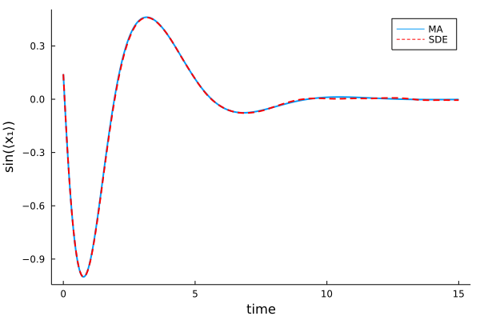

Moment Equations from SDEs
In the previous tutorial, we have shown how to generate and close moment equations for chemical reaction networks. Similarly, MomentClosure can be applied to systems of stochastic differential equations (SDEs) and here we demonstrate this functionality by working through a couple of practical examples. Namely, we consider two specific models from a relevant paper by Ghusinga et al. (2017) [1], 1) the Van der Pol oscillator and 2) a swinging pendulum, and apply moment closure approximations (MA) to reproduce some of the published results. For the theory behind the SDE moment expansion see here.
Model 1
The deterministic Van der Pol oscillator is described by [1]:
\[\begin{align*} \frac{d^2 x}{dt^2} - \epsilon(1-x^2)\frac{dx}{dt} + \omega_n^2 x = A\cos(\omega_g t), \end{align*}\]
where $\epsilon$ is the bifurcation parameter, $\omega_n$ the natural frequency, $\omega_g$ the force frequency and $A$ the force amplitude. We formulate a stochastic equivalent of this system by assuming that the force is noisy and taking $x_1 = x$ and $x_2 = \frac{dx}{dt}$, so that
\[\begin{align*} dx_1 &= x_2 dt, \\ dx_2 &= \left( \epsilon(1-x_1^2) x_2 - \omega_n^2 x_1 \right)dt + A\cos(\omega_g t)dt + A dw_t. \end{align*}\]
In Julia, systems of SDEs can be conveniently described using ModelingToolkit.jl that provides an SDESystem type. Defining such models is straightforward (as in this example) and in our case is done as follows:
using ModelingToolkit
@variables t, x₁(t), x₂(t)
@parameters ϵ, ω_n, ω_g, A
drift_eqs = [Differential(t)(x₁) ~ x₂;
Differential(t)(x₂) ~ ϵ*(1-x₁^2)*x₂ - ω_n^2*x₁ + A*cos(ω_g*t)]
diff_eqs = [0; A]
vdp_model = SDESystem(drift_eqs, diff_eqs, t, [x₁, x₂], [ϵ, ω_n, ω_g, A], name = :VdP)
ps = [ϵ => 0.1, ω_n => 120*pi, ω_g => 120*pi, A => 2.5] # parameter values
u0 = [0.1, 0.1] # initial conditions
tspan = (0., 0.1) # simulation time limitWe can now easily extract the raw moment equations up to second order using MomentClosure
using MomentClosure, Latexify
moment_eqs = generate_raw_moment_eqs(vdp_model, 2)
latexify(moment_eqs)\[\begin{align*} \frac{d\mu{_{10}}}{dt} =& \mu{_{01}} \\ \frac{d\mu{_{01}}}{dt} =& A \cos\left( t \omega_{g} \right) + \epsilon \mu{_{01}} - \epsilon \mu{_{21}} - \omega_{n}^{2} \mu{_{10}} \\ \frac{d\mu{_{20}}}{dt} =& 2 \mu{_{11}} \\ \frac{d\mu{_{11}}}{dt} =& \epsilon \mu{_{11}} + A \mu{_{10}} \cos\left( t \omega_{g} \right) + \mu{_{02}} - \epsilon \mu{_{31}} - \omega_{n}^{2} \mu{_{20}} \\ \frac{d\mu{_{02}}}{dt} =& A^{2} + 2 \epsilon \mu{_{02}} + 2 A \mu{_{01}} \cos\left( t \omega_{g} \right) - 2 \omega_{n}^{2} \mu{_{11}} - 2 \epsilon \mu{_{22}} \end{align*}\]
The obtained moment equations are equivalent to the published ones (except for a single term in $\mu_{11}$ equation as there is a typo in the paper), giving some confidence that everything works as intended!
Note that the moment equations are not closed as there are two fourth order moments involved, $\mu_{31}$ and $\mu_{22}$, and hence we need to resort to MAs. We proceed to apply the derivative matching approximation and solve the system of ODEs as follows:
using DifferentialEquations
closed_eqs = moment_closure(moment_eqs, "derivative matching")
u0map = deterministic_IC(u0, closed_eqs)
oprob = ODEProblem(closed_eqs, u0map, tspan, ps)
sol_MA = solve(oprob, Tsit5(), saveat=0.0001)Finally, we can also use DifferentialEquations to solve the SDEs for many trajectories and compare the ensemble statistics to the derivative matching approximation (getting a great match):
using DifferentialEquations.EnsembleAnalysis, Plots
prob_SDE = SDEProblem(vdp_model, u0, tspan, ps)
@time sol_SDE = solve(EnsembleProblem(prob_SDE), SRIW1(), saveat=0.0001, trajectories=100)
means_SDE = timeseries_steps_mean(sol_SDE)
plot(sol_MA.t, sol_MA[1, :], lw=2, label="MA", ylabel="⟨x₁⟩", xlabel="time")
plot!(sol_MA.t, means_SDE[1, :], lw=2, label="SDE", linecolor=:red,
linestyle=:dash, background_color_legend=nothing, legend=:topright, grid=false)
Model 2
We next consider a simple pendulum, deterministically described as [1]
\[\begin{align*} \frac{d^2\theta}{dt^2} + \frac{k}{m}\frac{d\theta}{dt} + \frac{g}{l} \sin{\theta} = 0, \end{align*}\]
where $\theta$ is the angular displacement, $m$ the mass of the pendulum, $g$ the gravitational acceleration constant, $l$ the pendulum length and $k$ the friction constant. The stochasticity is modelled as a white noise term arising due to pendulum randomly interacting with air molecules (assumed to be inversely proportional to $m$). Letting $x_1 = \theta$ and $x_2 = \frac{d\theta}{dt}$ we write down the SDE as:
\[\begin{align*} dx_1 &= x_2 dt, \\ dx_2 &= \left( -\frac{k}{m}x_2 - \frac{g}{l}\sin{x_1} \right)dt + \frac{1}{m}dw_t. \end{align*}\]
Using ModelingToolkit again we can define the model as
@variables t, x₁(t), x₂(t)
@parameters k, l, m, g
drift_eqs = [Differential(t)(x₁) ~ x₂;
Differential(t)(x₂) ~ -k/m*x₂ - g/l*sin(x₁)]
diff_eqs = [0; 1/m]
pendulum_model = SDESystem(drift_eqs, diff_eqs, t, [x₁, x₂], [k, l, m, g], name = :pendulum)
ps = [k => 10, m => 10, l => 10, g => 10]
u0 = [3, 3]
tspan = (0., 15.)As the drift term is non-polynomial, we can no longer write down the raw moment equations in a straightforward manner. Nevertheless, we can expand the expressions up to a certain Taylor expansion order $q$ and generate the corresponding time-evolution equations for the means and higher order central moments—this situation is identical to moment expansion for chemical reaction networks with non-polynomial propensities. Hence we can obtain the equations for the means and variances with $q=3$:
moment_eqs = generate_central_moment_eqs(pendulum_model, 2, 3)
latexify(moment_eqs) # the output here is maybe not the most visually pleasing\[\begin{align*} \frac{d\mu{_{10}}}{dt} =& \mu{_{01}} \\ \frac{d\mu{_{01}}}{dt} =& \frac{\left( - k \right) \mu{_{01}}}{m} + \frac{\left( - g \right) \sin\left( \mu{_{10}} \right)}{l} + \frac{\frac{1}{6} g M{_{30}} \cos\left( \mu{_{10}} \right)}{l} + \frac{\frac{1}{2} g M{_{20}} \sin\left( \mu{_{10}} \right)}{l} \\ \frac{dM{_{20}}}{dt} =& 2 M{_{11}} \\ \frac{dM{_{11}}}{dt} =& \frac{\left( - k \right) M{_{11}}}{m} + \frac{\left( - g \right) M{_{20}} \cos\left( \mu{_{10}} \right)}{l} + \frac{\frac{1}{2} g M{_{30}} \sin\left( \mu{_{10}} \right)}{l} + M{_{02}} \\ \frac{dM{_{02}}}{dt} =& \frac{\frac{1}{1}}{m^{2}} + \frac{-2 k M{_{02}}}{m} + \frac{g M{_{21}} \sin\left( \mu{_{10}} \right)}{l} + \frac{-2 g M{_{11}} \cos\left( \mu{_{10}} \right)}{l} \end{align*}\]
We can now approximate the moment equations using gamma closure, solve the ODEs numerically and compare the predictions to true SDE solution, finding good agreement:
closed_eqs = moment_closure(moment_eqs, "gamma")
u0map = deterministic_IC(u0, closed_eqs)
oprob = ODEProblem(closed_eqs, u0map, tspan, ps)
sol_MA = solve(oprob, Tsit5(), saveat=0.01)
prob_SDE = SDEProblem(pendulum_model, u0, tspan, ps)
sol_SDE = solve(EnsembleProblem(prob_SDE), SRIW1(), saveat=0.01, trajectories=100)
means_SDE = timeseries_steps_mean(sol_SDE)
plot(sol_MA.t, sin.(sol_MA[1, :]), lw=2, label="MA", ylabel="sin(⟨x₁⟩)", xlabel="time")
plot!(sol_MA.t, sin.(means_SDE[1, :]), lw=2, label="SDE", linecolor=:red,
linestyle=:dash, background_color_legend=nothing, legend=:topright, grid=false)
References
[1]: K. R. Ghusinga, M. Soltani, A. Lamperski, S. V. Dhople, and A. Singh, "Approximate moment dynamics for polynomial and trigonometric stochastic systems", IEEE 56th Annual Conference on Decision and Control (2017). https://doi.org/10.1109/CDC.2017.8263922